Cavaleiros Mágicos
A Ordem dos Cavaleiros Mágicos 「魔法騎士団 Mahō Kishi-dan」 é uma organização que serve como os protetores do Reino Clover. O grupo é liderado pelo Rei Mago.
Os membros são diferenciados por ranks. Uma promoção é possível com base no desempenho, representado pelo número de estrelas coletadas antes da Cerimônia de Conferências de Méritos de Guerra.
9 Esquadrões
Alvorecer Dourado
Touros Negros
Águias Prateadas
Rosa Azul
Reis Leões Carmesins
Louva-a-Deus Verdes
Pavões Corais
Orcas Púrpuras
Cervo Ciano
Hierarquia (Ranks)
Rei Mago 「魔法帝 Mahōtei」
Grão Cavaleiro 「大魔法騎士 Dai Mahō Kishi」
Sênior 「上級魔法騎士 Jōkyū Mahō Kishi」
Intermediário 「中級魔法騎士 Chūkyū Mahō Kishi」
Júnior 「下級魔法騎士 Kakyū Mahō Kishi」
O Rei Mago é o mais alto na organização. Abaixo dele, os ranks são divididos em cinco classes, sendo a 1ª classe a mais alta.
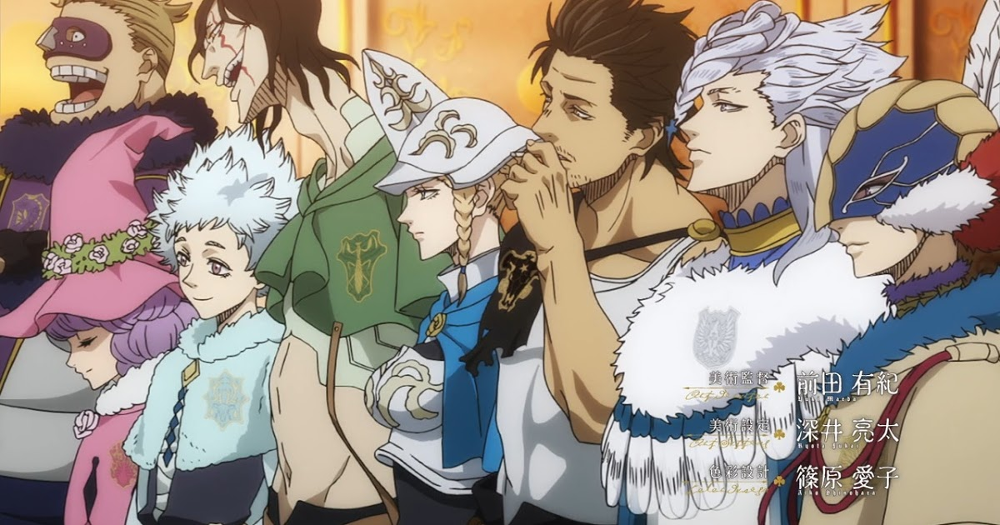
Raças do Mundo
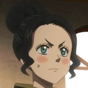
Anões
Um anão 「ドワーフ Dowāfu」 é um membro de uma antiga raça que viveu ao lado dos elfos e humanos.
Anões têm aparência humana, mas de estatura baixa. Eles são conhecidos por terem habilidades mágicas especiais.
Atualmente o unico anão vivo é a Charmy Pappitson, que vive no Reino Clover.
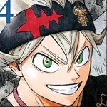
Humanos
Humanos 「人間 Ningen」 são a raça dominante no mundo, ocupando os principais reinos e terras.
Enquanto os humanos geralmente têm magia mais fraca que os elfos, eles são mais populosos, mais avançado tecnologicamente, e mais diversificada fisicamente, com alturas variadas e cores de pele e cabelo. A magia humana também tende a ser mais técnica.
A animosidade cresceu entre os humanos e elfos devido ao ciúme, e, finalmente, um grupo de humanos da realeza do Reino Clover roubou a mana dos elfos para si e depois matou os elfos, que mais tarde foi revelado ser o plano do demônio Zagred que os manipulou para ganhar um corpo e um grimório.
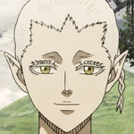
Elfos
A Tribo Elfo 「エルフ族 Erufu-zoku」 são uma antiga raça de pessoas que moravam na Região Esquecida do Reino Clover.
Elfos têm aparências humanóides, mas com orelhas pontudas e cabelos brancos. Todos os elfos tinham um imenso poder mágico e eram adorados como deuses por isso. Os humanos começaram a temer e desejar o poder, então um grupo da realeza humana usou uma ferramenta mágica para roubar o poder mágico dos elfos e depois matar eles.
Crianças do Reino Clover são ensinadas que os elfos eram demônios que queriam controlar o mundo e toda a mana e que Licht se transformou em um deus demônio, mas foi parado pelo primeiro Mago Imperador.
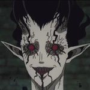
Demônios
Diabos ou Demônios 「悪魔 Akuma」 são uma raça antiga de seres mágicos que habitam o submundo 「冥府 meifu」, um mundo sombrio onde a única diversão é atormentar uns aos outros e brincar com os humanos do mundo dos vivos.
Apenas a mana negativa, os poderes de outros demônios e magia arcana podem neutralizar a magia do demônio. Os demônios desenvolveram um sistema de classes, e suas colocações nos ranks são atribuídas no nascimento e não podem ser alteradas.
Demônios de nível baixo podem ser derrotados atingindo-os com grandes quantidades de mana. No entanto, nível médio e superior requerem magos do Estágio Arcano. Os dez demônios conectados à Árvore de Qliphoth estão entre os demônios de nível superior e mais fortes.
O submundo é dividido em sete níveis e governado por três demônios de nível superior, que comandam gravidade, tempo e espaço e residem no nível mais baixo. Cada nível abriga demônios de vários níveis, com os demônios de nível superior dominando todos aqueles em seu nível.
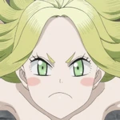
Espíritos
A Magia Espiritual「精霊魔法 Seirei Mahō」 é uma forma rara de magia que permite ao usuário invocar um espírito elemental para ajudá-lo. Esses espíritos se unem e servem a magos individuais que têm o mesmo atributo mágico que eles.
Os espíritos se desenvolvem ao longo do tempo com seus hospedeiros, mas não se sabe até que ponto os espíritos podem evoluir. Se o espírito for removido ou seu hospedeiro morrer, o espírito pode partir e procurar um novo hospedeiro digno. Alternativamente, um espírito pode ser passado através de uma linha de herdeiros, como é o caso com as rainhas e princesas do Reino Heart.
Existem quatro grandes espíritos elementais no mundo Sylph, o espírito do vento, Salamandra, o espírito do fogo, Undine, o espírito da água e o espírito da terra que tem seu nome desconhecido. Tanto para elfos e humanos, ser escolhido por um espírito é considerado proteção divina e prova de força.
Reinos
Reino Clover
O Reino Clover 「クローバー王国 Kurōbā Ōkoku」 é um país que faz fronteira com os Reinos Diamond e Heart e perto do Reino Spade. É o país natal do Rei Mago e dos Esquadrões de Cavaleiros Mágicos. Atualmente é governado pelo Rei Augustus Kira Clover XIII.
Reino Heart
O Reino Heart 「ハート王国 Hāto Ōkoku」 é um país que faz fronteira com o Reino Clover. É o lar de Undine, o espírito da água, que formou uma aliança com os governantes do país. A atual governante é a Princesa Lolopechka, e ela fez uma aliança com o Reino Clover para invadir o Reino Spade.
Reino Diamond
O Reino Diamond 「ダイヤモンド王国 Daiyamondo Ōkoku」 é o país de origem dos Oito Generais Brilhantes e o rival do Reino Clover. Devido a ser um reino pobre em recursos devido ao seu terreno báldio, ele se concentra em fortalecer seu exército para invadir outros reinos.
Reino Spade
O Reino Spade 「スペード王国 Supēdo Ōkoku」 é um país perto dos Reinos Clover, Diamond e Heart. Sob o governo da Tríade Negra, o Reino desenvolve relações hostis com os outros reinos.
Floresta das Bruxas
Floresta das Bruxas 「魔女の森 Majo no Mori」 é um pequeno e independente país das bruxas governado pela Rainha das Bruxas.
País Hino
País Hino 「日ノ国 Hino Kuni」 é a terra distante de Yami Sukehiro. Atualmente é governado pelo Shogun Ryuya Ryudo.
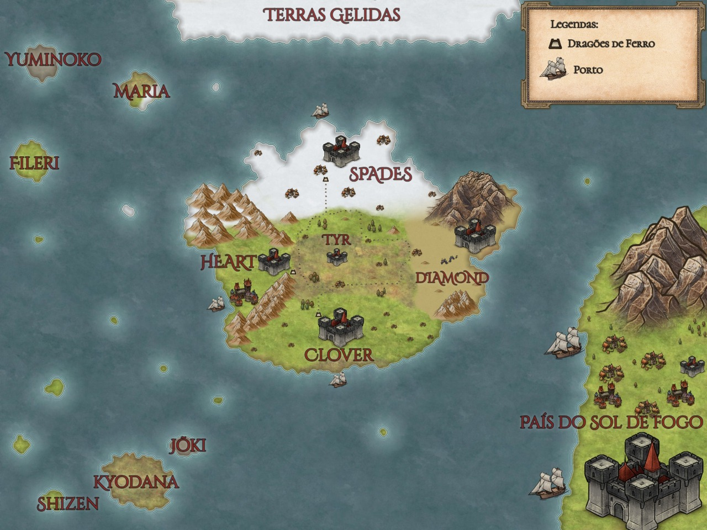
Conceitos
Anti-Pássaro
Anti-Pássaro 「アンチドリ Anchi Dori」são uma espécie de pássaros que são sensíveis á mana. Anti-pássaros são pequenos pássaros que têm penas negras nas costas, asas e ao redor do rosto. Os seus rostos têm penas vermelhas enquanto os seus lados inferiores têm penas brancas. Seus bicos são pretos e têm um par de penas com forma de chifres invertidos. Nero é o único Anti-pássaro que subiu os chifres e duas penas da cauda em forma de flechas. Os anti-pássaros são capazes de sentir a mana e irão ficar com as pessoas com baixa ou nenhuma mana. Anti-pássaros não abordarão ninguém com altos níveis de mana e ficarão assustados quando se aproximarem daqueles com poderosa mana. Atualmente, apenas Nero é mostrado para poder detectar pedras mágicas e armas anti-magia.
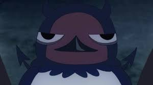
Grande Zona Mágica
As Grandes Zonas Mágicas 「強魔地帯 Gōma Chitai」 são áreas de mana excepcionalmente forte e densa, similar as masmorras. Localizações Conhecidas Templo Subaquático: O mais perigoso das conhecidas Grandes Zonas Mágicas, fica debaixo d'água na costa leste do Reino Clover. Trilha de Montanha do Vulcão Ultime: Esta área vulcânica é usada para treinamento. Zona da Rocha de Gravidade: Esta área contém grandes rochas flutuantes, e a maior delas é uma masmorra que o Olho do Sol da Meia-Noite usa como esconderijo.
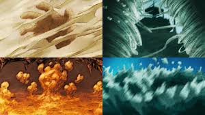
KI
Ki 「氣」 é o fluxo de energia vital nas pessoas. Embora exista separado de mana, eles podem influenciar uns aos outros. Ki é o fluxo de energia vital dentro dos corpos das pessoas, incluindo humanos, elfos, e demônios, e é afetado por seus pensamentos e ações. A qualidade do ki de uma pessoa é influenciada por suas emoções e intenções, como pessoas com emoções tumultuadas têm ki igualmente caótico e aqueles cheios de malícia têm ki inquietante. O ki de cada indivíduo é único e é raro que o ki de diferentes indivíduos seja o mesmo. Com treinamento adequado, a detecção de ki pode ser usado para prever ataques e movimentos de outros, incluindo objetos naturais e eventos encontrados na natureza. Ele pode até localizar pessoas invisíveis. Ao rastrear o ki de outra pessoa, um sensor pode detectar se essa pessoa está ou não mentindo. Os magos manipulam inconscientemente seu ki ao gerar seu poder mágico. Ao manipular deliberadamente seu ki, alguns magos podem aumentar temporariamente seu poder mágico e força física.
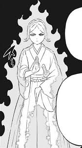
Magia
Magia 「魔法 Mahō」 é a manipulação e aplicação de mana, muitas vezes sob a forma de feitiços. A magia é alimentada por uma forma de energia denominada mana, que se origina do corpo do usuário. Esta energia também é naturalmente existente no meio ambiente e dentro de todos. Devido a isso, é de conhecimento geral que todos são capazes de usar magia até certo ponto. Ao mesmo tempo, pessoas que não possuem mana e que não conseguem usar magia são uma ocorrência completamente rara. E já que eles não são afetados pela Anti Magia, eles são capazes de empunhar Armas Anti Magia. Cada ser vivo que nasce com mana tem uma afinidade inata com um único atributo elemental. Podendo esse elemento ser um dos quatro principais (Magia de Água, Magia de Vento, Magia de Terra) ou um de seus derivados, a exemplo da Magia de Gelo. Devido ao mago ser vinculado com um único elemento ele, naturalmente, durante sua vida pode realizar feitiços que envolvam apenas o atributo de mana com o qual nasceu. Além de utilizar as magias elementais, os magos também podem empregar nelas formas de magia tidas como não elementais, alterando suas propriedades, tal como: Magia de Cura conjuntamente com Magia de Fogo, gerando o efeito de cura de ferimentos e não de queima.
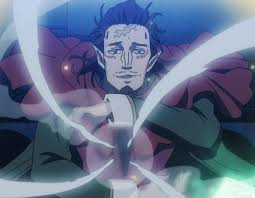
Grimório
Os grimórios são livros que possuem em seu interior o registro de todos os feitiços que um mago pode utilizar ou virá poder fazer uso. Cada grimório varia de acordo com usuário, na capa, grossura e tamanho. É possível alcançar novos feitiços através de treino, estudo e um esforço inabalável do mago. Em ocasiões raras, é dado a aqueles com forte determinação em meio a uma crise. Apesar de ser a fonte dos feitiços do mago, não ter a propriedade de um grimório não impede que o mago empregue sua magia, contudo impede este lance feitiços especializados.
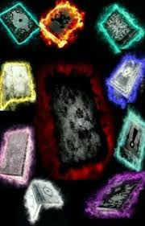
Mana
Mana 「魔マナ」 também conhecido como "Poder Mágico", é uma forma de energia que existe na natureza e nas pessoas. É a fonte de todos os feitiços mágicos. Mana é um aspecto importante de todo mago que já viveu, pois é sua fonte de poder mágico 「魔力 maryoku」, que é usado para lançar todos os feitiços mágicos. Essa energia é naturalmente existente e flui no ambiente e dentro de todos. Devido a isso, é do conhecimento geral que todos são capazes de usar a magia até certo ponto. Ao mesmo tempo, pessoas que não possuem mana e são incapazes de usar magia são uma ocorrência completamente rara. Além disso, quando alguém usa toda a sua mana, isso pode causar exaustão severa e, finalmente, torná-la inconsciente. Na natureza, a densidade de mana pode ser diferente de um lugar para outro. Locais com mana forte podem ter climas incomuns, como Raque, que é quente o ano todo e é usado como um resort de praia. Locais com densidades extremamente altas de mana, como masmorras se Grandes Zonas Mágicas, são conhecidos por terem ambientes radicalmente distorcidos e perigosos e, portanto, são muito difíceis de navegar com segurança. Além disso, a mana também pode ser usada como material para moldar objetos, como usá-la para criar uma porta enorme dentro de uma masmorra. No País Hino, o poder mágico é conhecido como "yoryoku" 「妖力 yōryoku」.
Atributos Mágicos Ao contrário do mana que existe na natureza, a mana que está situada dentro dos magos tem uma natureza específica, conhecida como atributos 「属性 zokusei」. Esses atributos são um dos aspectos que diferenciam um mago de outro. O atributo que um mago possui é aquele com o qual ele nasceu. Existem quatro elementos principais 「四大元素 yondaigenso」 no mundo: fogo, água, vento e terra. Todos os outros atributos mágicos são derivados desses quatro. Por exemplo, Magia de Fumaça é um ramo do atributo vento, e gelo do atributo água. Ao longo dos séculos, algumas culturas desenvolveram atributos mágicos não naturais ou irregulares, como corrente, aço, espacial e tempo. Alguns atributos mágicos são muito comuns, como fogo e água, enquanto outros atributos mágicos são excepcionalmente raros, como luz e espacial. Um mago pode ter apenas um atributo mágico e é incapaz de usar magia de qualquer outra natureza. Por exemplo, um mago que nasceu com o atributo de magia de fogo é incapaz de usar feitiços de outros tipos de magia, como vento ou água. Enquanto o mago comum não pode usar vários atributos, não há nada que os impeça de usar seu próprio atributo para pré-formar diferentes formas de magia, como Magia de Criação baseado em vento ou Magia de Cura baseado em fogo. O mago comum normalmente usa apenas uma ou duas formas de magia, mas magos incrivelmente poderosos podem usar várias formas de magia sem problemas. Além disso, magos podem ter diferentes habilidades latentes correspondentes ao elemento do qual seu atributo é derivado. Um exemplo seria magos com uma afinidade para elementos baseados no vento com a capacidade latente de mana sensorial. Isso resultou daqueles magos com maior sensibilidade ao fluxo de mana.
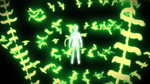
Masmorras
Masmorra 「 Danjon」é um marco de origens desconhecidas que poderiam surgir em vários locais sem qualquer aviso prévio. Uma masmorra foi descrita pelos magos como uma tumba antiga que foi estabelecida há muito tempo. Nelas encontram-se geralmente inúmeros tesouros, que foram deixados pelas pessoas que as construíram. Esses tesouros podem variar de uma poderosa ferramenta mágica para uma magia antiga. A estrutura do lado externo de uma masmorra é frequentemente dotada de um estilo arquitetônico simples e plano, como em uma torre de tijolos com uma única entrada. Eles também podem ter a aparência de uma ruína de vários edifícios, mas ainda com apenas um único portão de entrada. O lado interno de uma masmorra geralmente é muitas vezes maior do que o lado externo. Isso é devido à maior densidade de mana que distorce e embaralha o espaço dentro da masmorra ao ponto de também fazer a água correr ao contrário, por exemplo. Além disso, a construção tem instalada inúmeras armadilhas para evitar que alguém chegue aos tesouros. As armadilhas são geralmente em forma de círculos mágicos quem ativam após contato e vêm em grande variedade de atributos, desde baseadas em fogo as baseadas em plantas. Além disso, outras ameaças dentro da masmorra seriam criaturas mágicas que poderiam atacar a qualquer momento. Posteriormente, a alta densidade de mana também distorce a força gravitacional da calabouço onde um rio poderia fluir das paredes para os tetos. Alguma área da masmorra também poderia possuir um campo gravitacional menor, o que poderia fazer qualquer coisa na área flutuar. No centro de uma masmorra encontra-se o seu tesouro. Semelhante a todas as estruturas no calabouço, o portão para o tesouro também é composto puramente de mana com um mecanismo de bloqueio que impede que alguém entre no salão. O lado interno do tesouro toma uma forma de um salão espaçoso onde todos os tesouros são colocados de forma desorganizada. Em um caso em que alguém consiga entrar na sala de tesouros, a masmorra entraria em colapso assim que os principais tesouros fossem levados. Os locais onde os principais tesouros estavam localizados são geralmente o ponto de origem da caverna.
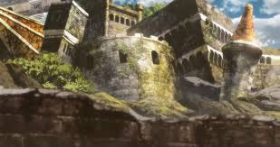
Matriz Rúnica
Matrizes rúnicas 「魔言術式 Magon jutsu-shiki」 são sequências de runas especialmente projetadas que são utilizadas em algumas formas de magia. Matrizes são amplamente apresentados em Magia de Armadilha, Magia de Selo e alguns tipos de Magia Proibida. Matrizes rúnicas são sequências de runas e formas, geralmente em um design circular geral, que servem como instruções para a magia usada para criá-las. Quanto mais complicada é uma matriz, mais tempo leva para desenhar. Uma vez que os magos desenham esses designs usando seu poder mágico, magos poderosos e habilidosos são capazes de manifestar matrizes quase que instantaneamente, enquanto magos fracos precisam de tempo para prepará-las com antecedência. Depois de desenhadas, as matrizes podem ser colocadas no ar ou em outra superfície, incluindo o corpo de um mago. Matrizes desenhadas apressadamente ou mal podem falhar ou explodir quando ativadas. Para a maioria das matrizes, eles desaparecem após um único uso e precisam ser redesenhados. Determinadas ferramentas mágicas têm matrizes como parte de sua função e design. Uma matriz também pode ser fisicamente esculpida em uma superfície, permitindo várias reutilizações por magos. O estudo da teoria da mana e da magia pode ajudar os magos a entender melhor o funcionamento da magia e, por sua vez, criar matrizes mais complicadas. Na Mana Method, a técnica mágica única do Reino Heart, o mago molda as runas e matrizes da mana natural em seu ambiente ao invés de puramente de seu próprio poder mágico; no entanto, esta técnica ainda requer que o mago tenha uma grande quantidade de poder mágico, bem como bons instintos e reflexos rápidos. Como tal, os magos do Quinto Estágio e abaixo são muito fracos para formar as runas corretamente, e apenas os magos do Terceiro Estágio ou superior são habilidosos o suficiente para usar a técnica em cenários de combate.
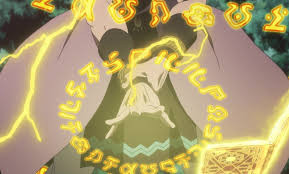
Árvore de Qliphoth
A Árvore de Qliphoth 「クリフォトの樹 Kurifoto No Ki」 é um canal mágico que se conecta ao submundo e permite que demônios entrem no mundo dos vivos. Um dos objetivos da Tríade Negra é a recriação deste canal. O canal mágico se ramifica como as raízes de uma árvore e desce ao sétimo e mais baixo nível do mundo subterrâneo. Em cada nível há um portão que normalmente impede que os demônios se movam entre os níveis. Dez demônios são colocados ao longo da profundidade do canal e são liberados quando o portão para seu nível se abre. Os demônios nos níveis inferiores são mais fortes do que os demônios nos níveis superiores, e o demônio no níve mais baixo é Lucifero. O ritual de abertura deste canal, conhecido como o Ritual do Advento de Qliphoth 「クリフォト降臨の儀 Kurifoto Kōrin no Gi」, tem duas partes: um mago com Magia de Árvore do Mundo e um mago com Magia de Escuridão em um círculo mágico combinando seus atributos mágicos, e três magos posicionados ao longo do perímetro de um círculo mágico maior. Esses três magos servem como ativadores para o ritual, então se eles forem derrotados, o ritual será interrompido. O ritual leva sete dias para ser concluído, momento em que os usuários da Árvore de Mundo e de Magia de Escuridão morrerão.
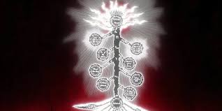